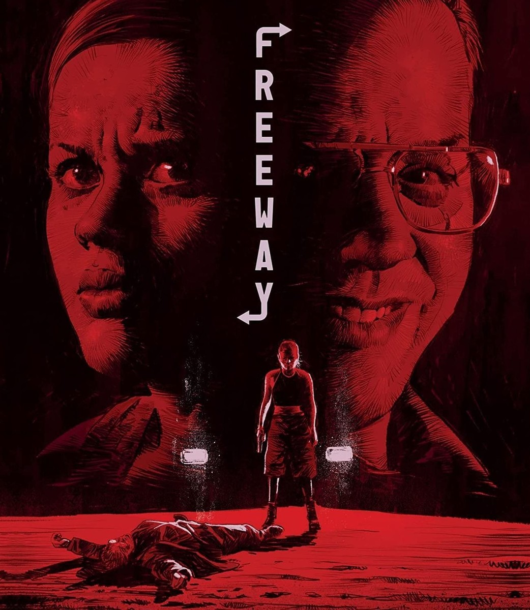

via Barnes & Noble.
Freeway
Fidelio may earn a commission if you buy through this link. How Fidelio is paid
The edition
- Label
- Vinegar Syndrome
- Format
- 4K UHD + Blu-ray
- Discs
- 2
- Edition
- Standard Edition
- Runtime
- 105 min
- Aspect ratio
- 1.85:1
- Audio
- Stereo
- Subtitles
- English SDH
- Region
- Blu-ray: Region A
- Barcode
- 814456026466
Special features
- Brand new commentary track with writer/director Matthew Bright
- Archival commentary track with writer/director Matthew Bright
- "Vulgarity is Timeless" (31 min) - a brand new interview with writer/director Matthew Bright
- "Producing Freeway" (18 min) - a brand new interview with producer Brad Wyman
- "Changing Lanes" (17 min) - a brand new interview with editor Maysie Hoy
- "To Catch a Predator" - a brand new interview with actor Wolfgang Bodison
- "You're Under Arrest" (12 min) - a brand new interview with actor Robert Peters
- "Murder Twins" (24 min) - a brand new interview with actresses Leanna Creel and Monica Lacy
- Archival interview with director Matthew Bright (15 min)
- Archival interview with actress Amanda Plummer (3 min)
- Archival interview with composer Danny Elfman (5 min)
- Archival interview with executive producer Oliver Stone (8 min)
- Archival interview with co-producer Samuel Hadida (8 min)
- Raw behind-the-scenes footage (6 min)
- Original Electronic Press Kit featurette (6 min)
- On-set 'soundbite' interviews
- Original video trailer
- Alternate scenes from the R-Rated cut
- Reversible sleeve artwork
As listed by Vinegar Syndrome.
Fidelio keeps collections like this one, edition by edition. What Fidelio is →